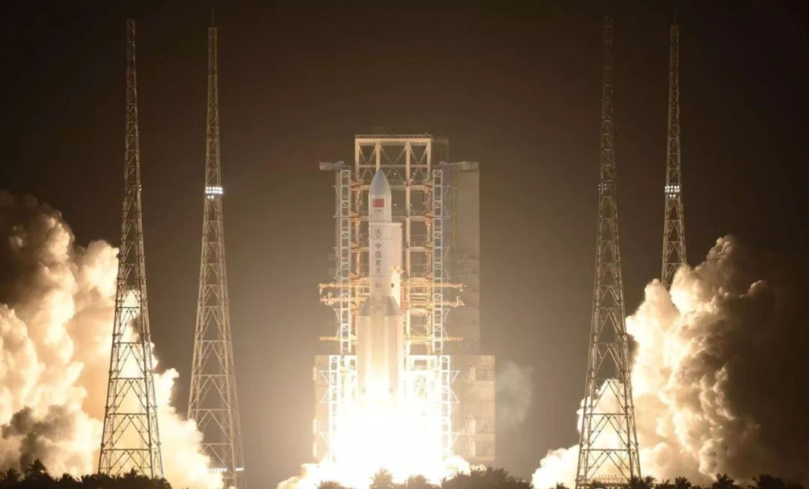
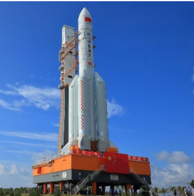
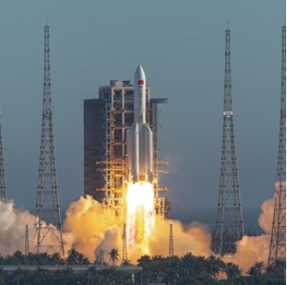
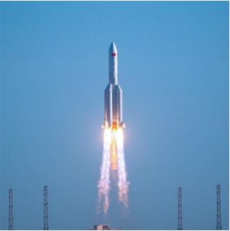
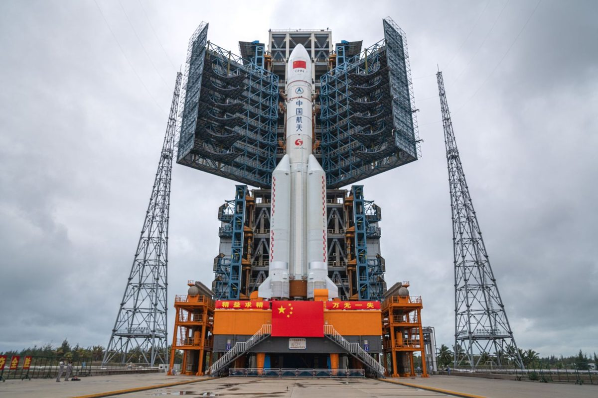
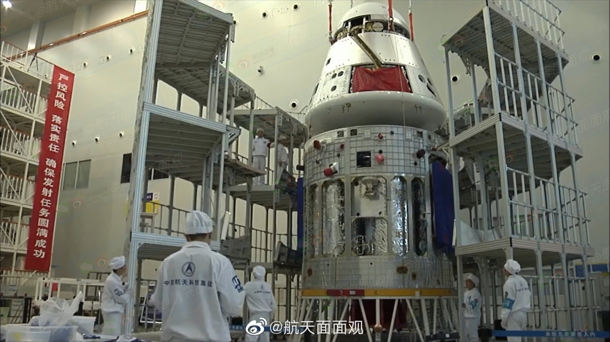

China's ambitious plans for the moon and Mars.
 China successfully launched its most powerful rocket, the hulking Long March-5B, on its maiden voyage into orbit on May 5. The 176-foot-long rocket—designed to shuttle astronauts to low-Earth orbit or even around the moon—blasted off from the Wenchang Space Launch Center in Hainan at 18:00 local time.
  
It measures around 53.7 meters in length, reports Xinhua,
and weighs around 849 tonnes at takeoff.
 According to state-run media, the rocket is powered by a pair of hydrogen-fueled YF-77 core stage engines and eight kerosene-fueled booster engines and can haul up a 55,000-pound payload into orbit with almost 2.4 million pounds of thrust. By comparison, SpaceX's Falcon 9 rockets each provide about 1.7 million pounds of thrust at lift-off and slightly more in space.
The successful launch of Long March-5B paves a path for China to explore further into our solar system.Before the end of the year, the Long March-5 is scheduled to launch China's first Mars probe and the Chang'e-5 lunar probe to collect moon samples and return to Earth, according to Xinhua.
Now, China is planning to launch a permanent space station by 2022, and there has even been talk of becoming just the second nation to send a person to the surface of the moon, possibly in the 2030s.
 China’s deep-space human spaceflight ambitions are clear, but its next steps have not yet been announced. Chinese officials have discussed sending humans to the Moon in the 2030s, but a lot more hardware needs to be built for that to happen, notably a lunar lander and potentially a new rocket to take humans to deep space, says Jones. “The Moon missions — they have plans,” he says. “We can see from this mission today that they’re really thinking about it and working towards it, but there’s still lots to be decided."
Today’s flight does signal that China is serious about sending its astronauts beyond Earth orbit. “They’ve made themselves a part of the conversation about what humanity is going to do in terms of deep space exploration going forward,” says Jones.